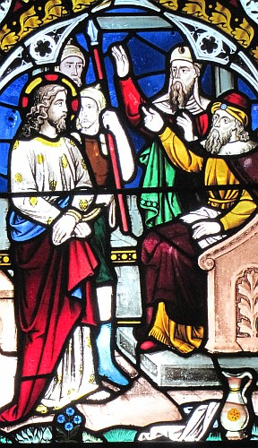
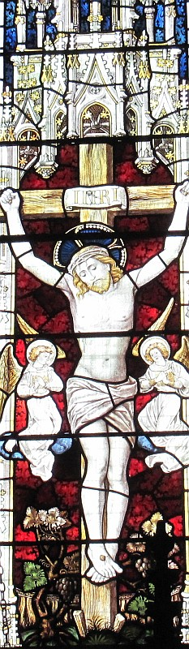
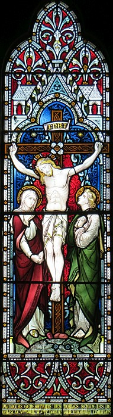

La Bouonne Nouvelle s'lon Mar, Chapitre 15

Vèrsets 1-39
Et dêliêment l'matîn les grands prêtres lus rêunnîdrent auve les seurvillants et l's êcrivains et tout l'conseil et amathîdrent Jésû et l'am'nîdrent hors et l'rendîdrent à Pilate. Et Pilate lî d'mandit, "Ch'est-i' qu'tu'es l'Rouai des Juis?"
Et li, i' lî rêponnit, "Ch'est en tchi ou l'dîtes, vous."
Et les grands prêtres l'atchûsîdrent d'un amas d'tchi. Pilate èrdémandit, "N'as-tu don pon d'rêponse? V'là tchi t'ont atchûsé d'tant d'maûfaits!"
Mais Jésû n'rêponnit d'aut', et Pilate en fut êmèrvilyi.
I' s'adonnait ès fêtes châque année qu'i' lâtchit iun des prisonnièrs, l'chein qu'nou chouaîsit. Et y'en avait iun tch'avait nom Bar-Abbas, blioutchi auve les cheins tch'avaient révolté et tch'avaient tué duthant lus r'volte. Et l'monde briyîdrent à d'mander chein qu'nou faîthait d'couôteunme. Pilate don lus rêponnit, "Ch'est-i' qu'ou voulez qué j'libéthe chu Rouai des Juis?" Car i' viyait cliai qu'les grands prêtres l'avaient rendu à cause dé jalousie. Mais l'monde, êtibotchis par les grands prêtres, voulaient qu'i' lâtchîsse Bar-Abbas. Pilate lus r'dit en rêponse, "Tch'est don qu'ou voulez qué j'faiche auve lé chein qu'ous app'lez l'Rouai des Juis?"
Et i' r'briyîdrent, "À la crouaix auve li!"
Pilate lus dit, "Pouortchi? Tchi maûfait qu'il a r'grée?"
Mais i' r'briyîdrent pus haut, "À la crouaix!"
Pilate, en voulant pliaithe au monde, lâtchit Bar-Abbas et env'yit Jésû, un co qu'nou l'éthait vrié, pouor êt' crucifié. Les soudards l'halîdrent dans l'bel du Prétorium et rassemblyîdrent toute la dgaîngue, lî m'ttîdrent eune pourpre robe, teurtchîdrent eune couronne d'êpîngnes et l'couronnîdrent auve. Épis coumme ch'tait pouor l'honother, i' dîdrent, "Vive lé Rouai des Juis!" et i' lî baillîdrent des cliamûses atout eune badgette et êcopîdrent sus li et lus agenouôllîdrent pouor lî faithe des révéthences.

Un co qu'i' l'avaient motchi, i' halîdrent la pourpre robe dé li et l'rabilyîdrent et l'am'nîdrent hors pouor êt' crucifié. Il' oblyigîdrent un pâssant v'nu des clios, Simon d'Cythène, péthe Alexandre et Rufus, à aller acanté ieux à seule fîn qu'i' portîsse la crouaix. I' l'am'nîdrent à la pliaiche tch'a nom Golgotha, v'là tchi veurt dithe "la cranne" et lî baillit du vîn dêmêlé d'auve d'la myrrhe, mais i' n'en but pon.
I' fut clioué à la crouaix et i' spartîdrent ses habits parmi ieux en jouant pouor lus lot. Ch'fut à la traîsième heuthe qué nou l'crucifyit et nou-s'affichit s'n atchûsâtion sus la crouaix, "Rouai des Juis" et crucifyit deux voleurs auve li, iun à dêtre et l'aut' à sénêtre.
(Ainchîn chein tch'avait 'té êcrit fut accomplyi: "I' fut compté parmi les malfaîteurs".)
Les pâssants l'motchaient, en châtchant lus têtes et dithant, "Ah, té tchi piqu'thais bas l'Templ'ye et l'èrbâtithais en trais jours, sauve-té et d'vale don d'chutte crouaix-là!" Et d'même les grands prêtres lus en motchîdrent auve les êcrivains et dîdrent, "Il a sauvé d's aut's mais n'peut pon sauver sé-même. Piêsse-t-i' d'valer achteu d'chutte crouaix, chu Christ, chu Rouai des Juis, à seule fîn qué j'vèrrêmes et craithêmes." Et les cheins tchi 'taient crucifiés acanté li l'traitaient étout.
Et quand vînt la siêxième heuthe, la nièrcheu couvrit tout l'pays jusqu'à la neuvième heuthe. Épis à la neuvième heuthe, Jésû briyit à hauteu d'tête, "Eloi, Eloi, lama sabachthani?" v'là tchi veurt dithe, "Mouôn Doue, mouôn Doue, pouortchi qu'tu m'as dêdgèrpi?" Et y'en avait des cheins tchi 'taient là l'tou tchi ouîdrent chennechîn et dîdrent, "Né v'là tchi crie à Elie."
Et iun dg'ieux s'en fut dêliêment qu'si eune êponge trempée d'vinnaigre, la mînt sus eune ravaûle et lî baillit à baithe, en dithant, "Assa, viyons si Elie veindra lé d'valer. "
Épis Jésû fit un grand brai et pâssit l'pas. Et l'ridgieau du templ'ye fut êtrilyi en deux dé haut en bas. Quand l'chent'nyi tchi 'tait d'amain vit coumme tchi qu'i' mouothit, i' dit, "Véthe, ch't houmme-chîn 'tait l'Fis du Bouôn Dgieu."
Vèrsets 1-15
Et dêliêment à sinne dé jeu, les grands prêtres lus avisîdrent auprès des vièrs et hoummes d'la louai et toute l'assembliée. I' lyîdrent Jésû, l'emm'nîdrent, et l'baillîdrent à Pilate. Pilate lî d'mandit, "Ch'est-i' té tch'es l'Rouai des Juis?"
I' lî rêponnit, "Ch'est vous tchi dites dé même." Épis les grands prêtres lanchîdrent un tas d'atchûsâtions contre li.
Pilate lî r'démandit: "N'y'as-tu pon d'rêponse? Èrgarde combein d'atchûsâtions qu'i' lanchent contre té." Mais viyant qu'Jésû n'y rêponnit mot, Pilate fut êmèrvilyi.
Assa i' soulait lus lâtchiz duthant la fête un prisonnyi, autchun dg'ieux pouor tchi qu'i' d'mandaient. I' s'adonnait qu'un houmme tch'avait nom Bar-Abbas 'tait en boête acanté les r'bêles tch'avaient machacré des gens duthant la r'bêl'lie. Lé monde vîndrent don et lus êcanchîdrent à d'mander à Pilate d'les sèrvi s'lon la vielle couôteunme. I' lus rêponnit, "Ch'est-i' qu'ou voulez qué j'vos lâque chu Rouai des Juis?" Ch'est en tchi il avait réalîsé qué ch'tait par jalousie qu'les grands prêtres l'i'avait bailli. Mais les grands prêtres r'êtibotchîdrent lé monde à seule fîn qu'i' lus lâtchîsse Bar-Abbas au run.
Pilate lus r'pâlit, "Tch'est don qu'ou voulez qué j'faiche auve l'houmme qu'ous app'lez l'Rouai des Juis?"
I' lî briyîdrent, "Cliouez-lé à la crouaix!"
Pilate lus d'mandit, " Tchi ma qu'il a fait, li?"
Mais i' r'briyîdrent d'abouôn pus, "Cliouez-lé à la crouaix!" Et Pilate, voulant satisfaithe lé monde, lus lâtchit Bar-Abbas; et un co qu'il avait fait fouôté Jésû, i' l'baillit pouor êt' clioué à la crouaix.
Vèrsets 5-43
Mais Jésû n'rêponnit rein, entouor tchi Pilate en fut ravi. Et i' lus lâtchait aller un prisonnyi à la fête, lé chein qu'i' voulaient d'mander. Et y'en avait iun tch'avait nom Barabbâ tchi 'tait prisonnyi auve ses canmathades d'èrvolte et tch'avait tué dans l'èrvolte. Et l'peupl'ye lus êprîndrent à braithe à haûteu d'vouaix et lus êprîndrent à d'mander qu'i' lus fîsse coumme il avait tréjous fait. Pilate don lus rêponnit et dit, "Voul'-ous que j'vos lâque aller l'Rouai des Juis?" Car i' savait bein qu'les grands prêtres l'avaient mîns entré ses mains par jalousie. Mais les grands prêtres êtibotchîdrent lé peupl'ye pouor d'mander pus à co d'aver Barabbâ.
Et Pilate rêponnit et s'fît, "Mais don tch'est qu'ou voulez qué j'faiche au chein qu'ous app'lez l'Rouai des Juis?"
Et i' briyîdrent dèrché et dîdrent, "Crucifyie-lé!"
"Mais," qué Pilate sé fit, "tchi ma qu'il a fait?"
Mais i' briyîdrent acouo pus haut, "Crucifyie-lé!" Et don Pilate voulit contenter l'peupl'ye et lâtchit aller Barabbâ, et auprès aver fait Jésû êt' fouôté, i' l'mînt entré lus mains pouor êt' crucifié. Et les soudards lé m'nîdrent dans l'bel (tch'est l'prétouaithe) et criyîdrent à toute la dgaîngue. Et i' l'griyîdrent auve eune robe dé pourpe et lî mîndrent eune couronne d'êpîngnes qu'il' avaient engibâtré l'tou d'la tête. Et i' lus êprîndrent à l'saluer en dîthant, "Es-tu d'charme, Rouai des Juis?" Et i' lî capuchîdrent la tête auve eune branque et êcopîdrent sus li et lus mîndrent à g'nouors pouor lus motchi d'li. Et quand i' fûdrent pathés d'lus motchi d'li, i' lî halîdrent la robe dé pourpe et lî r'mîndrent ses hardes et lé m'nîdrent d'houors pouor lé crucifier. Et i' fîdrent un houmme tchi pâssait tch'avait nom Simon l'Cythénien, tchi v'nait du clios et tchi 'tait l'péthe d'Alexandre et d'Rouoget, porter sa crouaix. Épis i' lé m'nîdrent à la pièche dé Golgotha, v'là tchi veurt dithe l'endrait d'la cranne. Et i' lî baillîdrent du vîn à baithe mêlé auve d'la myrrhe mais i' n'en voulit pon. Et quand i' l'eûdrent crucifié, i' chârîdrent ses hardes en halant ès lots pouor saver tch'est qu'un châtchun en éthait.

I' 'tait trais heuthes quand i' l'crucifyîdrent. Et l'diton pouortchi qu'i' 'tait là 'tait êcrit en d'ssus d'sa tête et ch'tait, "Lé Rouai des Juis". I' crucifyîdrent étout auve li deux voleurs; iun à sa main dêtre et l'aut' à sa main s'nêtre. Et chennechîn tchi 'tait êcrit vînt à s'adonner: "Il a 'té mîns à côté des lâreneurs". Et les cheins tchi pâssaient par-là lus motchaient d'li et châtchaient la tête et dîthaient, "Ah, té tchi droqu'thais l'Templ'ye et l'èrbâtithais dans trais jours, saûve-té té-même et d'vale d'la crouaix!"
Et étout les grands prêtres lus en motchaient d'pathe auve l's êcrivains et lus entré-dîthaient, "Il a saûvé l's aut's - i' n'peut pon s'saûver lî-même! Qué l'Onguenné, l'Rouai d'Israël, d'vale achteu d'la crouaix pouor qué j'lé vèrrêmes et qué j'lé craithêmes!" Et les cheins tchi 'taient crucifiés auve li lus motchaient étout d'li. Mais d'pis siêx heuthes y'eut d'la nièrcheu sus tout l'pays jusqu'à neuf heuthes. Et à neuf heuthes Jésû briyit à haute vouaix et dit, "Eloi, Eloi, lamma sabachthani!" - v'là tchi veurt dithe, "Man Dgieu, man Dgieu, pouortchi qu'tu m'as abandonné?"
Et tchiqu's'uns des cheins tchi 'taient là butés ouîdrent chenna et dîdrent, "V'là i' crie à Élie!" Et iun dg'ieux couothit et emplyit eune êponge dé vinnaigre et la mînt au but d'eune branque et li'en baillit à baithe et dit, "Lâtchiz pouor vaie si Élie veindra pouor lé haler."
Et Jésû briyit un tèrribl'ye brai et mouothit. Et l'vouaile du Templ'ye fut trilyi en deux d'pis l'haut jusqu'à bas. Et quand l'chent'nyi tchi 'tait là endrait li l'vit mouothi en briyant coumme chenna, i' dit, "Pouor dé seux, ch't houmme-là 'tait l'Fis du Bouôn Dgieu!"
Y'avait étout des femmes tchi r'gardaient d'liain, dé tchi y'avait Mathie Magdalène et Mathie méthe du p'tit Jacques et d'Joses et Salomé, dé tchi quand i' 'tait en Galilée i' l'avaient siévi et aîdgi auve lus dêmnîn, et acouo un fliotchet d'aut's tch'avaient monté acanté li à Jéthusalem. Et quand vînt l'sé - car ch'tait l'jour pouor sé graie tch'est d'vant l'jour du r'pos - Joseph d'Arimathée, un consilyi respectabl'ye tchi s'fiait étout sus la glouaithe du Bouôn Dgieu prînt tchoeu et s'en fut siez Pilate lî d'mander l'corps dé Jésû.
Vèrsets 40-47
Y'avait étout des femmes tchi r'gardaient d'au liain, et chenna auve Mathie Magdalène et Mathie méthe du p'tit Dgémîn et d'Joses, et Salomé tchi l'avait siévi quand i' 'tait en Galilée et aîdgi auve lus dêmnîn, et acouo un tas d'aut' femmes tchi 'taient acanté li quand il amontit à Jéthusalem. Et quand vînt l'sé, viyant qu'i' 'tait l'jour d'l'èrgraiethie, ch'est en tchi la sèrvelle du jour d'èrpos, Joseph d'Arimathée, un consilyi respectabl'ye tchi s'fiait étout à la Glouaithe dé Dgieu, prînt tchoeu et s'en fut siez Pilate lî d'mander l'corps dé Jésû. Et Pilate fut ravi qu'i' 'tait dêjà mort, mais i' fit v'nîn l'chent'nyi et l'entchêtit pouor saver s'il avait 'té mort eune pause. Et quand i' l'ouït du chent'nyi, i' baillit l'corps à Joseph. Et ch'tî-chîn acatit un lîncheu et l'fit d'valer d'la crouaix et l'enfliubit atout chu lîncheu-là et l'mînt dans un tombé tchi 'tait copé dans l'rotchi et boulit un rotchi à la goule du tombé. Et Mathie Magdalène et Mathie méthe dé Joses r'gardaient iou qu'nou l'mettait.
Viyiz étout:
- La Bibl'ye
- La Bouonne Nouvelle s'lon Mar: 1
- La Bouonne Nouvelle s'lon Mar: 2
- La Bouonne Nouvelle s'lon Mar: 3
- La Bouonne Nouvelle s'lon Mar: 4, i-xxxiv
- La Bouonne Nouvelle s'lon Mar, Chapitre 4, vèrsets iii-ix
- La Bouonne Nouvelle s'lon Mar, chapitre 4, vèrsets 35-41
- La Bouonne Nouvelle s'lon Mar: 5
- La Bouonne Nouvelle s'lon Mar: 6
- La Bouonne Nouvelle s'lon Mar: 7
- La Bouonne Nouvelle s'lon Mar: 8
- La Bouonne Nouvelle s'lon Mar: 9
- La Bouonne Nouvelle s'lon Mar, Chapitre 9, vèrsets 1-13
- La Bouonne Nouvelle s'lon Mar: 10
- La Bouonne Nouvelle s'lon Mar, Chapitre 11, vèrsets 1 à 11
- Lé mithacl'ye du fidgi s'lon Mar
- La Bouonne Nouvelle s'lon Mar: 11
- La Bouonne Nouvelle s'lon Mar: 12
- La Bouonne Nouvelle s'lon Mar: 13
- La Bouonne Nouvelle s'lon Mar: 14
- La Bouonne Nouvelle s'lon Mar, Chapitre 16
{kind=link}